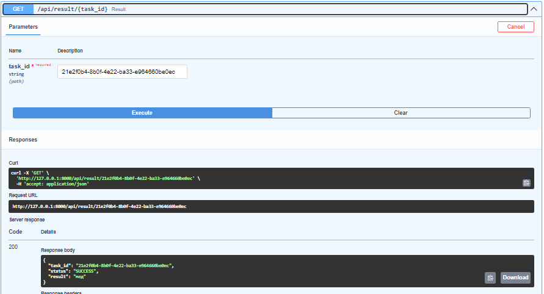
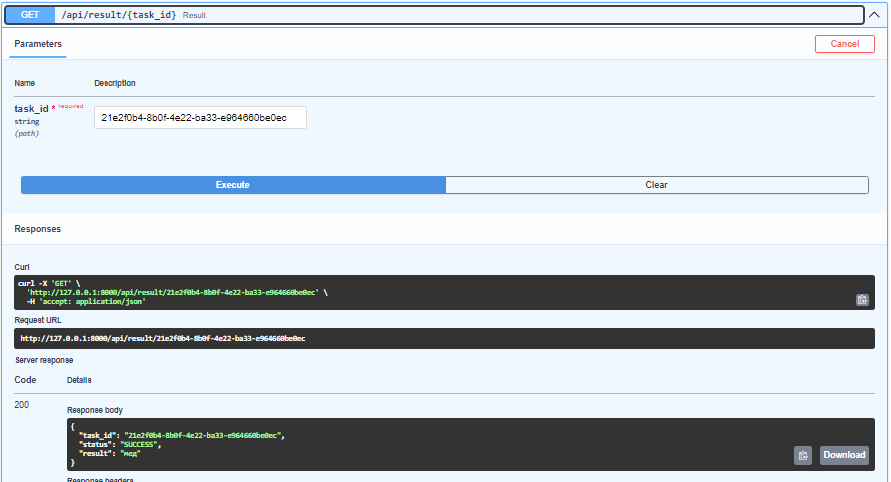

Celery+Redis
Начнем с того, зачем вообще в подобном приложении нужна очередь.
ML-модели требовательны к ресурсам, их работа может занимать довольно много времени. Несмотря на то, что представленная в данной работе модель работает быстро, это не означает, что в дальнейшем ситуация не изменится. Запуск тяжелых вычислений через очередь позволяет не блокировать приложение (что важно в случае большого количества пользователей), а также создавать несколько инстансов модели для распределения нагрузки.
Модель обернута в отдельное FastAPI-приложение, а очередь реализована через Redis + Celery, где Redis выступает в том числе как брокер сообщений. Была попытка поднять RabbitMQ, но он, хотя поднимался локально, выкидывал странные ошибки с путями в докере, поэтому было решено пойти по пути наименьшего сопротивления. API иммет три эндпоинта, связанных с обработкой задач в фоновом режиме: создание задачи, проверка статуса, получение результата:
app = FastAPI()
@app.post('/api/predict')
async def create_prediction(ingredients_joined: str = ''):
task = predict.delay(ingredients_joined)
return JSONResponse(status_code=202, content={'task_id': task.id, 'status': task.status,})
@app.get('/api/result/{task_id}')
async def get_result(task_id: str):
task = AsyncResult(task_id, app=celery_app)
if not task.ready():
return JSONResponse(status_code=202, content={'task_id': task_id, 'status': task.status, 'result': None})
result = task.get()
return JSONResponse(status_code=200, content={'task_id': task_id, 'status': task.status, 'result': result['result']})
@app.get('/api/status/{task_id}')
async def get_status(task_id: str):
task = AsyncResult(task_id, app=celery_app)
return JSONResponse(status_code=200, content={'task_id': task_id, 'status': task.status})
А вот так выглядит выполняемая задача:
class PredictTask(Task):
def __init__(self):
super().__init__()
self.tokenizer = None
self.model = None
self.base_mask = None
self.optional_mask = None
def __call__(self, *args, **kwargs):
if not self.tokenizer:
self.tokenizer = load_tokenizer('celery_tasks/models/tokenizer.pkl')
if len(BASE_WORDS_WHITELIST):
self.base_mask = create_prediction_mask(self.tokenizer, BASE_WORDS_WHITELIST)
if len(OPTIONAL_WORDS_WHITELIST):
self.optional_mask = create_prediction_mask(self.tokenizer, OPTIONAL_WORDS_WHITELIST)
if not self.model:
self.model = load_model('celery_tasks/models/model.h5')
return self.run(*args, **kwargs)
@app.task(ignore_result=False, bind=True, base=PredictTask)
def predict(self, ingredients_joined: str) -> dict[str]:
try:
if ingredients_joined == '': # first ingredient is always base
prediction = predict_next_word(self.tokenizer, self.model, ingredients_joined, mask=self.base_mask)
else:
prediction = predict_next_word(self.tokenizer, self.model, ingredients_joined, mask=self.optional_mask)
return {'status': 'SUCCESS', 'result': prediction}
except Exception as ex:
try:
self.retry(countdown=2)
except MaxRetriesExceededError as ex:
return {'status': 'FAIL', 'result': 'max retried achieved'}
Небольшой пример работы:
 

Основное приложение может общаться с данным через http-запросы, а именно
app = FastAPI()
app.add_middleware(
CORSMiddleware,
allow_origins=origins,
allow_credentials=True,
allow_methods=["*"],
allow_headers=["*"],
)
CELERY_APP_URL = "http://celery_app:5000"
...
@app.post('/api/process')
async def process(ingredients_joined: str = ''):
async with httpx.AsyncClient() as client:
try:
response = await client.post(f"{CELERY_APP_URL}/api/predict?ingredients_joined={ingredients_joined}")
response.raise_for_status()
task_info = response.json()
return task_info
except httpx.HTTPStatusError as exc:
raise HTTPException(status_code=exc.response.status_code, detail=exc.response.text)
except Exception as ex:
raise HTTPException(status_code=500, detail=str(ex))
@app.get('/api/result/{task_id}')
async def result(task_id: str):
async with httpx.AsyncClient() as client:
try:
response = await client.get(f"{CELERY_APP_URL}/api/result/{task_id}")
response.raise_for_status()
task_info = response.json()
return task_info
except httpx.HTTPStatusError as exc:
raise HTTPException(status_code=exc.response.status_code, detail=exc.response.text)
except Exception as ex:
raise HTTPException(status_code=500, detail=str(ex))
@app.get('/api/status/{task_id}')
async def status(task_id: str):
async with httpx.AsyncClient() as client:
try:
response = await client.get(f"{CELERY_APP_URL}/api/status/{task_id}")
response.raise_for_status()
task_info = response.json()
return task_info
except httpx.HTTPStatusError as exc:
raise HTTPException(status_code=exc.response.status_code, detail=exc.response.text)
except Exception as ex:
raise HTTPException(status_code=500, detail=str(ex))